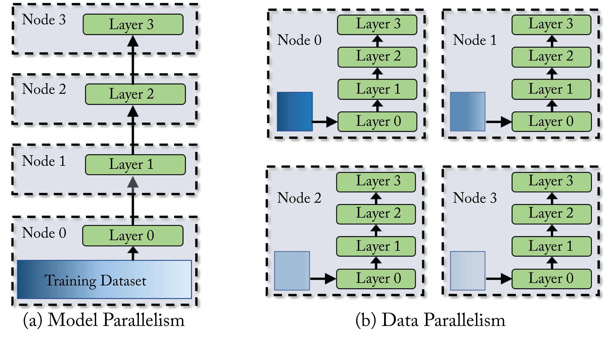
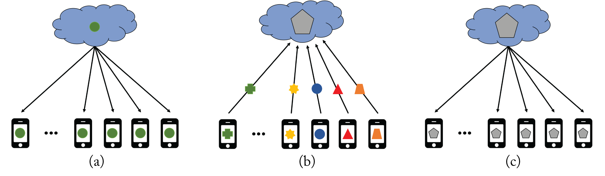
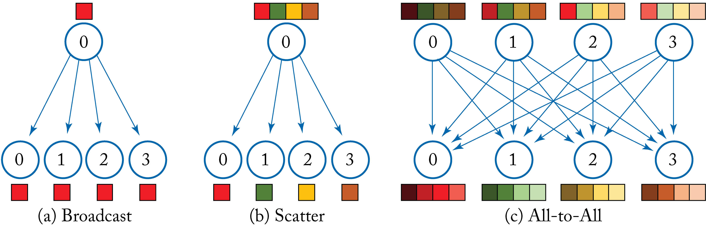
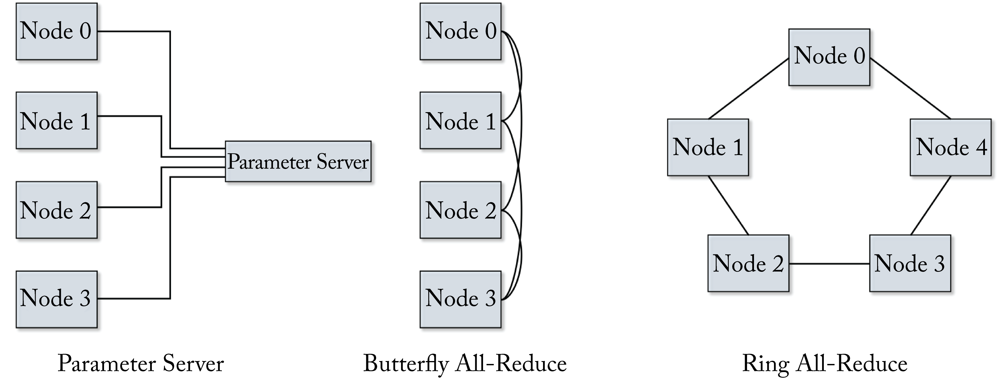

Chapter 5: Distributed Training
The number of computations required to train state-of-the-art models is growing exponentially, doubling every \({\sim}3.4\) months (far below the glory days of Moore's Law 1.5-2 years) [DH18]. Training a large model can have two primary challenges: (1) the memory required exceeds availability and (2) the time-to-train on a single node can be prohibitively long. To illustrate, training production models commonly used at Google would require \(2\)-\(16\) months on one dedicated DL processor (TPU v2) [JYK+20]. Distributing the computations or the memory requirements among multiple nodes alleviates these challenges and is becoming the norm to train large-scale production models. Hardware designers at Intel, Nvidia, AMD, Google, Graphcore, Cerebras Systems, and others, detailed in Section 7.7, have or are developing dedicated, scalable, multinode training platforms.
Training the popular ResNet-50 model commonly used for image classification requires about \(10^{18}\) (\(1\) exa) operations which is considered small by today's standards and can be trained in under 2 hours with \(8\) V100 GPUs and in 75 seconds with \(2048\) V100 GPUs [YZH+18; Nvi20c; YKT+18]. Training the larger \(8.3\) billion Megatron-LM model requires \(12\times 10^{21}\) (\(12\) zetta) operations, and can take several days on hundreds of compute nodes [SPP+19]. Training the prodigious 600 billion parameter GShard takes 4 days on \(2048\) TPU v3 accelerators [LLX+20].
The main techniques to distribute a training workload across multiple nodes are data parallelism and model parallelism (including pipeline parallelism), illustrated in Figure 5.1, and a hybrid of these. Also, federated learning is a form of data parallelism distributed training in edge (client/IoT) devices. Data and model parallelism benefit from high bandwidth interconnects between the nodes. In data parallelism, a batch (called the global-batch in this chapter) is split among the worker nodes and called the node-batch, with each node working on the same model. The nodes communicate the weight updates. In model parallelism, the model is split among the worker nodes, and the nodes communicate the activations. Model parallelism is typically used when the memory requirement exceeds the node's memory. In hybrid parallelism, data parallelism is used across groups of nodes (super-nodes), and model parallelism is used within each super-node.
 Figure 5.1: (a) In model parallelism the model is distributed among multiple compute nodes. (b) In data parallelism, the training dataset is split among multiple compute nodes and each node has the entire model.
Data parallelism is more commonly used in industry, but as the sizes of the models are growing, hybrid parallelism is becoming the norm for state-of-the-art models. In the remainder of this chapter, we describe data and model parallelism, their typical usages in data center training, and their limitations. We also discuss federated learning, and we review various communication primitives.
5.1 Data Parallelism
Distributed training using data parallelism is widely adopted at hyperscalers to reduce the total time-to-train (TTT). It is the basis for federated learning, detailed in Section 5.3, used for edge device distributed training. In data parallelism, each batch is split among the worker nodes. Each worker node computes the gradient with respect to its node-batch and communicates it to a root node or, when no root node is used, with the other worker nodes.
Synchronous SGD (Sync SGD) requires that all the worker nodes have the same weights at the end of each iteration. Using Sync SGD across various nodes results in precisely the same trained model as using SGD on one node with the global-batch, that is, with a batch that combines all the node-batches. A simple communication strategy is for each worker node to communicate the node gradient to a root node known as the parameter server (PS). The PS aggregates the node gradients, updates the global model weights, and broadcasts (sends) the updated global model to all the worker nodes. The main drawback is the synchronization overhead from waiting to receive the node gradients, in particular, due to straggling (slowest) workers or slower network links. In practice, more advanced communication strategies are used and discussed in Section 5.4.
Asynchronous SGD (Async SGD) does not enforce synchronization before updating the global model and alleviates the synchronization overhead in Sync SGD. However, Async SGD has other challenges. Async SGD requires more tuning of the optimization hyperparameters (such as the momentum constant), requires more iterations to train, and typically has worse convergence performance than Sync SGD when the number of worker nodes is higher than 8 [MZH+16]. The convergence is affected because the global model receives stalled (older and less relevant) node gradients. Furthermore, Async SGD does not match single-node SGD performance, and therefore it is more difficult to debug. Async SGD (unlike Sync SGD) typically does not scale past \(8\) (and often 2 or 4 is the limit) nodes. An Async-Sync SGD hybrid approach can work where the nodes are clustered in up to 8 groups. Updates within a group are synchronous, and updates between groups are asynchronous. Going beyond \(8\) groups reduces performance. The main exception where Async is used across several nodes with minimal impact is for the embedding layer in large recommender systems (and sometimes the layer immediately after) as the updates only affect a limited subset of embedding entries. Note that in the Sync SGD and Async SGD literature and in this section, the term SGD is typically an alias for all the extensions of SGD discussed in Section 4.3, such as SGDM, Adam, and LARS. The rest of this section focuses on Sync SGD.
Ideally, the TTT is reduced proportionally with the increased number of compute nodes known as perfect linear scaling. That is, doubling the number of nodes halves the TTT. However, there are algorithmic and communication challenges that prevent perfect scaling:
-
Large batches require a few additional training epochs to converge to a flat minimum.
-
There is a limit on the maximum batch size that decreases the training iterations.
-
There is higher communication overhead with more nodes.
The methodologies below mitigate some of these challenges.
A large global-batch is essential so that the node-batch is sufficiently large for high compute utilization among the worker nodes. However, there is a limit on the maximum batch size that decreases the training iterations. Experimentation with careful LR turning is required to find that batch size, as discussed in Sections 4.3 and 4.5.4. Also, using an optimizer more robust to large-batches, such as LAMB, and a warmup phase is recommended.
Communication overhead also hurts the scaling performance: the more nodes and more data, the higher the communication time. After a point, the execution time is dominated by communication time and cancels out the savings from the additional compute. The following reduces this overhead (these techniques also apply to federated learning):
-
hiding (overlapping) the communication between nodes by the computation within a node (node-to-node high-bandwidth is beneficial);
-
compressing the gradients before communicating them (related work used \(1\) bit and \(2\) bits to communicate the gradients) [LHM+18; SFD+14; WXY+17];
-
computing more local iterations before synchronizing;
-
ignoring stagnant nodes and updating the global gradient using \({\sim} 95\%\) of the nodes (this is not possible with some communication primitives); and
-
sparsifying the gradients, that is, only transmitting the largest magnitude gradients and accumulating the rest locality [AHJ+18].
You et al. achieved extensive scaling using some of these techniques. They partitioned a \(32K\) batch size using \(1K\) CPU nodes and achieved the fastest ResNet-50 TTT at the time [YZH+18]. Similarly, You et al. achieved record scaling and TTT on the BERT model on a TPUv3 Pod (1024 chips) [YLR+20]. Today, ResNet-50 can be trained in several days on one V100 GPU node or in \({\sim}2\) minutes (\({\sim}1\) epoch per second on ImageNet-\(1\)k) using \(3456\) V100 GPU nodes or using a TPUv3 Pod with no accuracy drop [MSU+19; YKC+18].
5.2 Model Parallelism
The adoption of model parallelism in production is expanding as the size of the models (and the size of the embedding layers in recommenders) continues to grow, and the memory required for training transcends the capacity of a single GPU or accelerator node. Today, models with hundreds of millions of weights are common in production, and new models are approaching one trillion weights [LLX+20].
In model parallelism, the model (the weights) is partitioned and distributed among the nodes. There are two main partitioned strategies: parallel layers and sequential (pipeline) layers, the latter one shown in Figure 5.1b. In both strategies, each node processes the entire batch and communicates the activation in the forward propagation and the activation gradients in the backward propagation. Partitioning the layers with a balanced load (known as device placement) is an NP-complete problem. Dynamic programming and RL can improve device placement [HNP+18; MGP+18]. Optimal device placement is a topic of ongoing research. Other less common strategies are partition across channels or partition across spatial axes in CNNs using a modified convolution operator [GAJ+18; DMM+19; JZA18; JGK18].
Model parallelism with parallel layers runs simultaneously on separate nodes and occasionally communicate their activations. The original design of the legendary AlexNet topology used this approach with two GPUs to mitigate the memory limitations of a single GPU [KSH12]. The current model parallelism algorithms can often scale up to \(4\) or \(8\) nodes with careful tuning. Embedding layers in recommender systems, such as Facebook's DLRMs, can scale to more nodes [NKM+20].
When dozens or hundreds of nodes are available to train large size models, a hybrid model-data parallelism can be optimal. This hybrid approach was used by Google to train the \(11\) billion weights T5-Transformer on TPUs-v3 and by Nvidia to train the \(8.3\) billion weights Megatron-LM model on V100 GPUs [RSR+19; SPP+19]. The Mesh TensorFlow (mtf) library supports hybrid parallelism and uses an integer linear programming (ILP) algorithm to determine the partition [SCP+18].
5.2.1 Pipeline Parallelism
Pipeline parallelism is a type of model parallelism (although some literature treats it as separate). Each layer or group of sequential layers is placed on a separate node. Consecutive batches are put into the pipeline to keep it full. The communication between the nodes is limited to the activations of the layers where the partitions occur and their respective activation gradients. The downside of pipeline parallelism is that the updates use stalled weights with similar issues as Async SGD. Chen et al. proposed using the momentum to estimate the weight and scaled to 4 GPU nodes with no convergence degradation [CYC19]. Cerebras System proposed a linear predictor to mitigate staleness and scaled to \(169\) nodes on the ResNet-110 model with the CIFAR-10 dataset, a small research dataset [KCV+20]. Additional algorithmic advancements are required to mature pipeline parallelism to scale to hundreds of nodes on production models and datasets.
There is limited support for efficient pipeline parallelism (and model parallelism in general) in the major frameworks. To improve pipelining, Google introduced GPipe [HCB+19]. GPipe splits a batch into micro-batches to reduce idle time in the model pipeline and accumulates the gradients across the micro-batches to maintain statistical consistency. The user specifies how to partition the model, that is, which portions of the model are allocated to which nodes. Similarly, Microsoft uses PipeDream and DeepSpeed for GPU pipelining [HNP+18]. Graphcore supports pipelining with gradient checkpoint (discussed in Section 4.7).
5.3 Federated Learning
Federated learning is a decentralized learning methodology introduced by Google and is an extension to data parallelism [MMR+17]. The goal of federated learning is to use a large number of local client devices, such as mobile phones, to train a model without transmitting the training data. Federated learning is gaining adoption in the industry due to the data privacy and network bandwidth benefits. It is used to train the word predictor in Google Gboard and URL predictor in Firefox [HRM+19; Har18].
In federated learning, as illustrated in Figure 5.2, an untrained or partially trained global model is pushed from a centralized global server to a large number of local client devices. Each device trains the model for multiple epochs using its local data and then transmits the updated local model to the central server within a given time window. All the devices train for the same local epochs and with the same batch size. The number of local iterations per epoch varies as it depends on the size of the local training dataset. The global server updates the global model as an average of the local models (more on this below). The server then broadcasts this new global model back to the client devices, and the process repeats. The number of epochs, batch size, and number of clients requires tuning for best performance.
 Figure 5.2: Federated learning. (a) An untrained global model (represented by the green dot) is broadcasted to the client devices. (b) The training happens in each client device, and only the updated client model (represented by the various geometric figures) is transmitted to the cloud to update the global model. (c) The updated global model (represented by the gray pentagon) is broadcasted to all the client devices, and the process repeats. Based on [Sas19].
Federated learning is especially useful when the client device has sensitive or private data the user does not want to share with an external server, or when the cost or the power to transmit the training data is higher than processing locally. Examples include mobile phone apps, healthcare patient data, companies' emails, and manufacturing equipment data. Some organizations (e.g., a hospital) can be thought of as a device client among a group (e.g., a group of hospitals) in federated learning.
Federated learning is a generalized form of Sync SGD but, rather than synchronizing after every iteration, the weights are synchronized after some local epochs. The more infrequent the synchronizations, the more likely the model has convergence challenges. However, frequent synchronizations consume significant network bandwidth, which is prohibited in some devices. The primary challenge of federated learning is to reduce the synchronization frequency (by increasing the number of local epochs) and maintain the expected training convergence.
Two additional challenges can affect convergence. First, the data in each device is typically not independent and identically distributed (IID); data within a client is more similar than data across clients, and the number of samples between clients varies. This non-IID violates the guidance to randomize the order of the samples in the training dataset so each batch has IID samples.
Second, the local devices have heterogeneity both in computational capacity and network reliability across devices. In particular, mobile phones vary significantly in memory, compute, and network connectivity with approximately two-thirds of operating mobile phones in the world being over six years old [Haz18].
The server uses an average of the local models weighted by the number of training samples in each device to compute a global model update. Alternatively, a more stable approach is to randomly choose the clients (assuming a large pool of candidates) with probability proportional to the number of training samples in each device, and use an unweighted average to compute the global model update [LSZ+19].
A federated learning system uses more clients than needed to train local models to mitigate device and network unreliability. A system may assign \(300\) devices to train local models but only needs to collect local models from \(256\) devices. Assuming each device uses a local batch size of \(16\), then the global batch size is \(256\times 16=4096\), which may be the limit (the largest batch size that converges to an adequate minimum) for some topologies.
A simple technique to improve robustness to both non-IID batches and local models that are unable to complete the local number of epochs is to use a proximal term. This term is a small adaptable penalty in the objective function for significant deviations from the global model. Note that it is better to communicate a local model that has not completed the requested epochs than to ignore it [LSZ+19].
Communication overhead can be reduced by quantizing with rotations and communicating the weight changes [KMY+17]. A randomly applied mask can further reduce the number of communicated parameters. Traditional data compression techniques can also be used. These techniques also apply to conventional Sync SGD data parallelism to decrease network traffic but are more critical in federated learning due to the higher communication cost. Optimization techniques, such as LAMB and RangerLARS, used in data centers, can be applied to federated learning to increase the number of client devices and accelerate training. Also, TensorFlow provides an API to simulate federated learning with a couple of additional lines of code.
Areas of Caution
Three areas of caution are as follows:
-
Training and communicating a model can be expensive (in terms of battery and data consumption). These expenses are mitigated by limiting training to periods when the device is plugged in and idled and communicating the local model when the device is on a free wireless connection.
-
Despite not transmitting the training data, some information about the local training data can be extracted from local models [HAP17]. To preserve privacy, for instance, Google uses secure aggregation where the local models are only unencrypted and averaged when multiple models become available to the server [BIK+17]. OpenMined developed PySyft on top of PyTorch to improve privacy. Section 10.3 discusses other ongoing work to maintain privacy.
-
Older devices with limited computational and memory capacities, and devices in remote areas may not proportionally contribute to the overall training. This imbalance results in a model that learns characteristics biased toward more affluent populations. Further work is required to mitigate this.
5.4 Collective Communication Primitives
There are various communication functions, known as collective communication primitives, and library implementations. These primitives are used in data parallelism to communicate and then aggregate the local gradients, in model parallelism to communicate the activations and their respective gradients, and in transitioning between model and data parallelism to rearrange the data properly. Some common collective communication primitives are as follows:
-
Broadcast: \(M\) elements in the root node are copied to the other \(P-1\) processor nodes, as shown in Figure 5.3a.
-
Scatter: \(M\) elements in the root node are partitioned, and each partition with \(M/(P-1)\) elements is copied to a different processor node, as shown in Figure 5.3b.
-
Reduce: the root node receives \(M\) elements from each of the others \(P-1\) processor nodes and performs a reduction operation, such as sum, maximum, minimum, mean, or product, across each of the \(P-1\) elements.
-
Gather: the root node receives \(M/(P-1)\) elements from each of the other \(P-1\) processor nodes and concatenates them (equivalent to Figure 5.3b with the arrows reversed).
-
AllReduce: Equivalent result as Reduce + Broadcast.
-
AllToAll: \(M\) elements in each node are partitioned, and each partition with \(M/(P-1)\) elements is copied to a different processor node where the received partitions are concatenated. Equivalent result to Scatter and Gather for all nodes, as shown in Figure 5.3c.
-
AllGather: Equivalent result as Gather + Broadcast.
-
ReduceScatter: Equivalent result as Reduce + Scatter.
The AllReduce, AllToAll, and AllGather primitives do not require a dedicated root node. While their end-result is equivalent to sequentially using two simpler primitives, they typically use more efficient implementations. Later in this section, we analyze various AllReduce implementations.
 Figure 5.3: (a) The broadcast primitive copies a set of elements in the root node to the other nodes. (b) The scatter primitive copies a separate partition of a set of elements in the root node to the other nodes. Note that reversing the arrows results in the gather primitive. (c) The all-to-all primitive (also known as transpose) copies a separate partition of a set of elements in each node to the other nodes, where the received partitions are concatenated.
The MPICH, OpenMPI, Intel MPI, and MVAPICH libraries implement primitives using the Message Passing Interface (MPI) standard specifications. The MPI is a library specification that operates at the transport layer implemented by MPICH and other libraries in C/C++ and Fortran with message-passing standards and APIs. In the MPI specification, each processor node has a unique address space. The literature on collective communication primitives is extensive, including their optimizations for clusters connected by switched networks and a study of MPI usages [TRG05; LMM+19].
Libraries that offer higher-level communication functions using existing primitives libraries or reimplementing them are: Horovod, Nvidia's NCCL, Facebook's Gloo, Intel's oneCCL, and SparCML and Blink from academia [SDB18; RAA+19; WVP+19]. Horovod has broad industry adoption for GPU and CPU distributed training. It is supported by various DL libraries, including TensorFlow, PyTorch, and MXNet. Horovod uses NCCL for GPUs and oneCCL, MPI, and Gloo for CPUs. Uber developed and contributed Horovod to the LF AI foundation.
The most common primitives used in distributed training are (in this order) AllReduce, AllToAll, and AllGather. AllReduce is used to aggregate the local gradients in data parallelism. AllToAll is used to exchange the activations and activation gradients in model parallelism and to transition from model to data parallelism. AllGather is used to concatenate activations or gradients in a specified order, for instance, in Gshard to change a sharded (broken) tensor to a replicated tensor [LLX+20].
In Sync SGD data parallelism, the end result of AllReduce is for all the nodes to receive the aggregated sum of all the local weight gradients; that is, the reduction happens across the nodes. For instance, during the backpropagation of a typical convolution layer with a 4D weight gradient tensor (number of kernels, number of channels, kernel height, and kernel width), the AllReduce primitive aggregates the 4D tensors across all the nodes and broadcasts the sum. In Sync SGD, AllReduce is necessary to ensure the weights across all the nodes are the same at the end of each training iteration. AllReduce algorithms differ in the specific mechanism to achieve this Reduce+Broadcast, but the results are the same.
In the following analysis, we examine four AllReduce algorithms based on the number of nodes, latency, and bandwidth: parameter server (PS), AllReduce-Ring, AllReduce-Butterfly, and AllReduce-Tree, shown in Figure 5.4. We assume there are \(P\) nodes connected in a \(1\)-hop all-to-all (fully connected) physical network: each node-to-node link has the same latency \(L\) independent of how many nodes are communicating. We also assume the links are bidirectional with a per directional bandwidth of \(B\) between any two nodes, and the nodes can simultaneously send and receive messages without affecting the unidirectional performance. The terms node and processor are used interchangeably, and rank refers to the node ID from \(0\) to \(P-1\). Note that the physical network topology impacts which algorithm is optimal. For instance, running an AllReduce-Ring algorithm on a system with a ring physical network topology is much better than an AllReduce-Butterfly algorithm on the same ring physical topology since the load would not be balanced between links. Section 7.5 discusses the physical interconnects and physical network topologies.
 Figure 5.4: Various AllReduce algorithms.
Note the difference between network latency and bandwidth. The latency \(L\) is the time to communicate one byte from one node to another. The bandwidth \(B\) is the number of bytes that can move through the network per second (the width of the network pipeline) per direction. The total execution time \(T\) to transfer a message of \(M\) bytes from one node to another node is:
where \(T'= M/B\) is the time it takes to move the data without accounting for the latency. The above equation ignores the software overhead and the time to aggregate (sum) the \(M\) elements by the receiver node.
PS performs a reduce-sum and then a broadcast operation, which requires two steps. The total execution time is:
The data moves in one direction, and most of the links in the fully connected physical network are unused.
The AllReduce-Ring requires two steps in a \(1\)-hop all-to-all physical network. In step \(1\), each node breaks down the message into \(P\) smaller packages and sends a message of size \(M/P\) to each of the other \(P-1\) nodes, and the receiver nodes aggregates the messages. In step \(2\), each node broadcasts the aggregated message of size \(M/P\) to each of the other \(P-1\) nodes. The total execution time is:
The data moves bidirectionally using all the links in the fully connected physical network.
The AllReduce-Tree performs a reduction and a broadcast operation both in a tree pattern, which requires \(2\cdot\log(P)\) steps (log is base \(2\) and a floor operator). The total execution time is:
Using two trees simultaneously in each link reduces the time, with each tree working on half the data. Each package is of size \(M/2\). A similar approach is the Two-Tree algorithm, also known as Double Binary Tree [SST09]. The total execution time using bidirectional links is:
Most of the links in the fully connected, physical network are unused.
The AllReduce-Butterfly requires \(\log(P)\) steps. For simplicity, we assume \(P\) is a power of \(2\). During each step, a package is exchanged with a neighbor in a butterfly pattern. More precisely, at step \(s\in[0, \log(P)-1]\), node \(p\in[0,P-1]\) sends and receives a package of size \(M\) to node \(p+\frac{P}{2^{s+1}}\) \(<P\). The total execution time using bidirectional links is:
The analysis shows that for homogeneous all-to-all physical topology, the AllReduce-Ring has the lowest execution time when \(P>2\). This homogeneity is typical for \(1\)-hop connections, where two nodes only go through one network switch to communicate, such as a rack of CPUs or a DGX-2 system. Most CPU rack designs rely on the top-of-rack (ToR) switch even for intra-chassis CPU message passing. For chassis with internal switches, the analysis above only applies to CPUs within the chassis. In a DGX-2 system, GPU nodes have \(300\) GB/s bidirectional NVLink links (\(150\) GB/s in each direction) (note that the GPU nodes in a DGX-2 system have an additional, albeit smaller, \(32\) GB/s bidirectional link through PCIe).
Large-scale distributed training across nodes that require multiple hops usually involves multiple communication primitives. Otherwise, the largest latency and smallest bandwidth link would determine the primitive's latency and bandwidth. A common approach to scale, for instance, across multiple DGX-2 systems is to use AllReduce-Ring within each DGX-2, then AllReduce-Ring across the DGX-2 systems, and then broadcast within each DGX-2. A similar approach can be employed with racks of CPU servers.
Wang et al. developed a collective communication library known as Bling that efficiently uses heterogeneous links [WVP+19]. Bling uses a collection of spanning trees to find various paths to pass messages in parallel and has shown to outperform other libraries in the presence of heterogeneous network links.
In this chapter, we addressed three challenges to training some models: the required memory exceeds availability, the time-to-train is prohibitively long, and the training data is scattered across multiple edge devices. We detailed data and model parallelism. Data parallelism is more commonly used in industry and is supported by the major frameworks. However, some impediments include memory constraints for prodigious models, high communication latency for large models, large global-batch to scale, and small node-batch inefficiencies. Model parallelism can be used for large models, but usually, the scaling is limited to eight nodes, the optimal way to split the model is an NP-complete problem. There is limited support in the major frameworks for efficient model parallelism. Pipeline parallelism suffers from stalled weights, and we discussed some work to partially mitigate this. Hybrid parallelism is becoming the norm for state-of-the-art models. Data parallelism is used across groups of super-nodes, and model parallelism is used within each super-node with 4-8 nodes per super-node. In the next chapter, we explore the various formats to represent numerical values used in production and those in academic exploration as well as compression techniques to reduce the memory footprint of models.